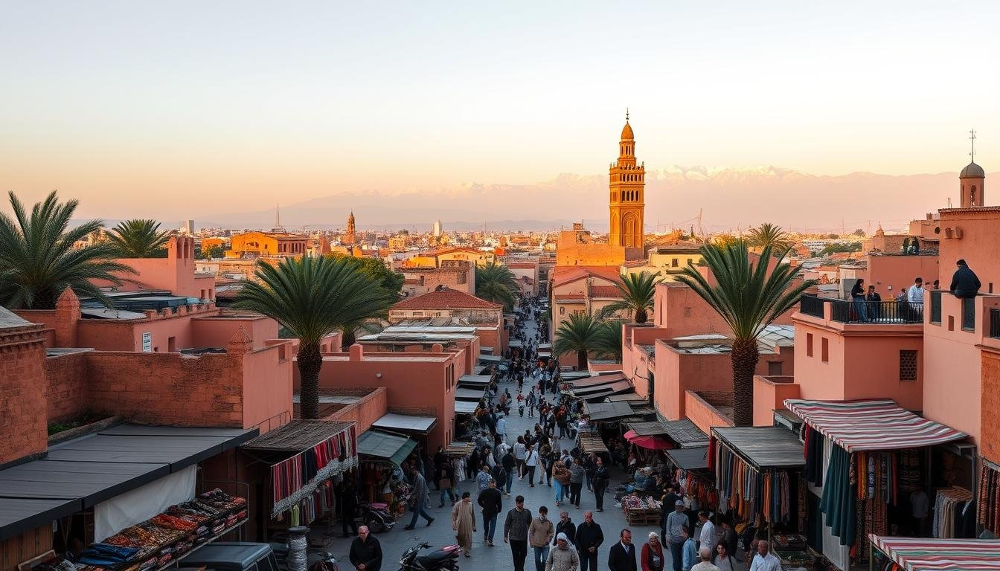
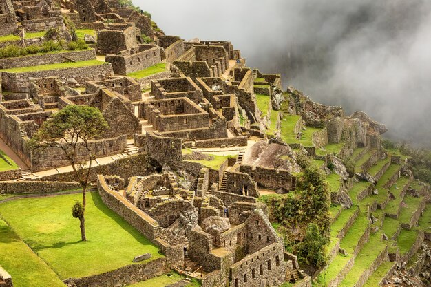

Japón · Templos y jardines
Kioto
Mil templos, bosques de bambú y la vida de barrio detrás de las farolas de Gion.
Marzo–abril
Desde $1,450
Desde Panamá hacia el mundo
Atlas es un cuaderno de rutas para viajeros curiosos: reunimos destinos, datos prácticos y un formulario simple para planear tu próxima salida.
Cinco destinos para empezar a escribir tu historia.Revisa las fichas de cada destino: temporada, presupuesto estimado y qué esperar del lugar.
Combina ciudades, define fechas y anota lo que no te quieres perder.
Completa el formulario con tus preferencias para preparar tu solicitud de viaje.
Mil templos, bosques de bambú y la vida de barrio detrás de las farolas de Gion.

Callejones color tierra, té de menta y una escapada de una noche única en el Sahara.

El punto de partida hacia Machu Picchu y los pueblos escalonados del Valle Sagrado.
“Viajar no es solo llegar a un lugar; es notar cómo cambia la manera en que ves el propio.”— Equipo Atlas